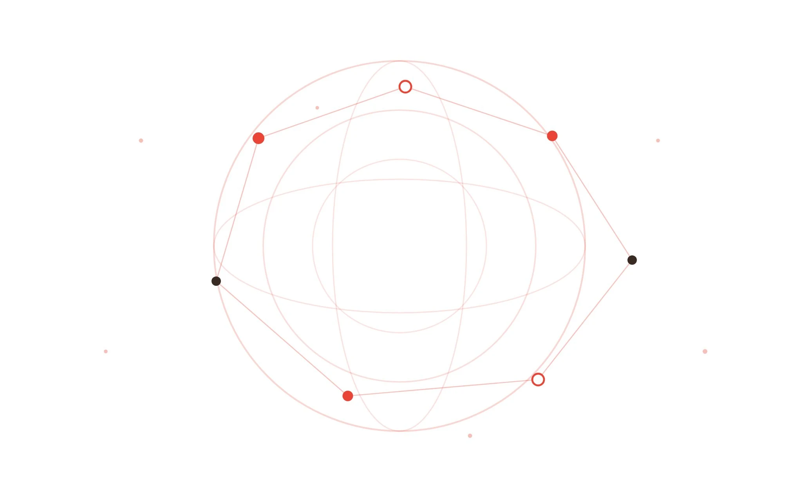
ANIMA · 命をつなぐ
かつて「すべての生命をつなぐ」を掲げた橋がある。
その志を医療として再起動し、命を、世界へつなぐ。
WHAT ANIMED DOES
国と体調を入れるだけで、確認すべきこと・必要な書類・相談相手をAnimedが整理します。
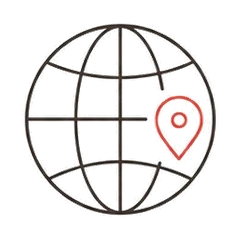
国・期間・目的を入れると、その渡航に合わせた準備が始まります。
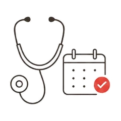
医師・薬剤師・通訳の空き状況を照合し、通話で確認できます。
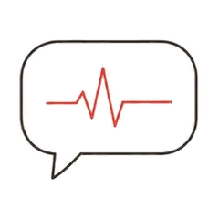
現地のことばが不安でも、通訳をまじえて医師・薬剤師に相談できます。
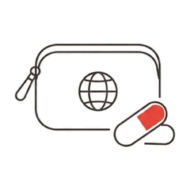
常用薬の規制区分を国別に整理し、必要な手続きを案内します。
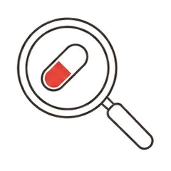
手に入らないときは、成分から現地の同等薬候補を薬剤師が確認します。
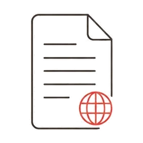
診断書・薬剤証明書・紹介状を、相談で確認後に整えられます。
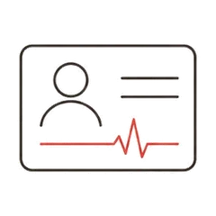
持病・アレルギー・常用薬をまとめて持ち歩ける形にします。
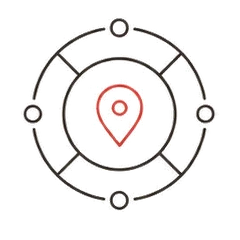
渡航国の救急番号と現在地共有、サポート窓口への導線。
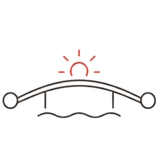
相談から書類・現地連携まで、つながりを途切れさせません。
HOW IT WORKS
4つのステップで、出発前の不安を準備に変えていきます。
REGISTER
渡航先の国・都市・期間・目的を入力。あなたの渡航に合わせて、確認すべき点をAnimedが組み立てます。
REVIEW
持病・アレルギー・常用薬を登録すると、持込で確認が必要な薬と、用意したい英文書類が整理されます。
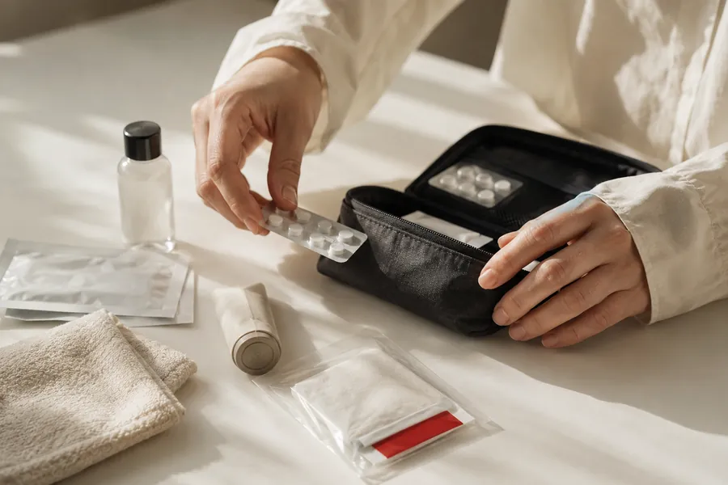
CONSULT
医師・薬剤師・通訳の空き枠を照合し、全員がそろう枠で通話を予約。通訳をまじえて、出発前の確認ができます。
PREPARE
診断書・薬剤証明書・紹介状などを、相談で確認のうえ準備。学校・企業・保険会社向けのサマリも同じ場所から。
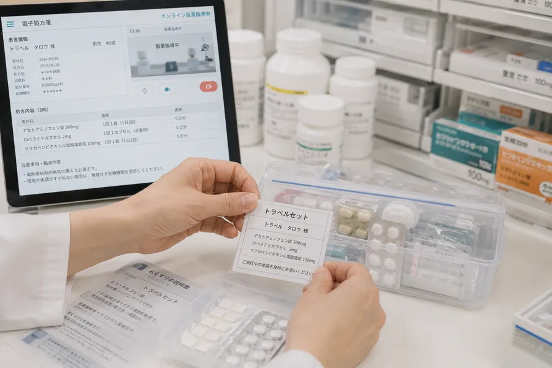
WHO ANIMED IS FOR
渡航のかたちは人それぞれ。あてはまる場面から始められます。
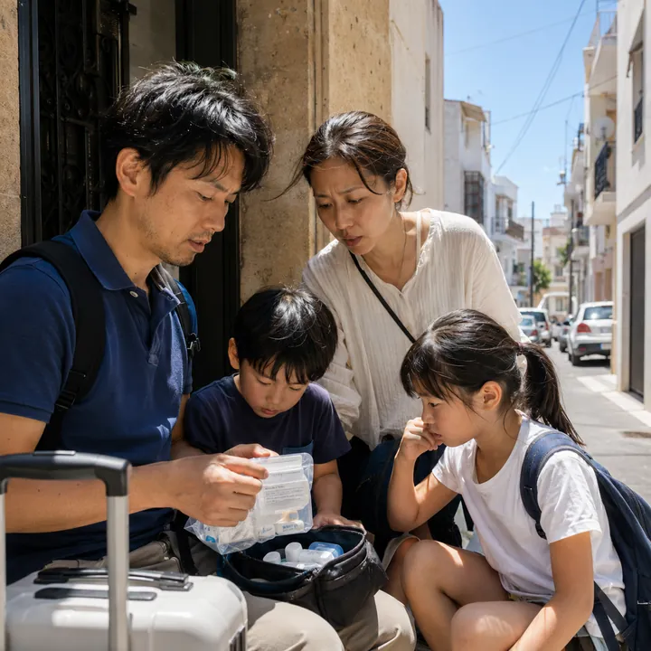
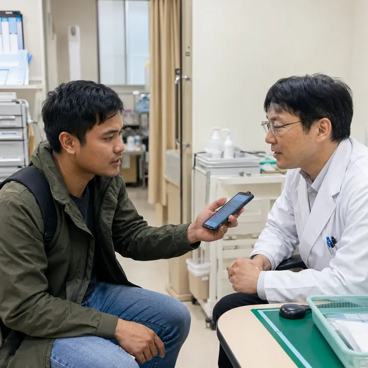
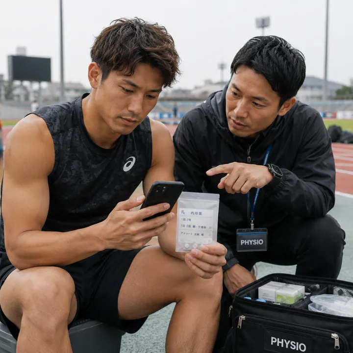
SAFETY FIRST
Animedは準備を助ける支援ツールです。最終判断は、いつも現地の最新情報と医療者の確認を優先します。
Medical Supervision
医師・薬剤師の確認を前提に、書類や相談の流れを設計しています。最終的な判断は、担当する医療者がおこないます。
Important
PARTNERS
利用者の費用負担はありません。医療機関・薬局・企業・学校・保険・旅行会社と連携して支えます。